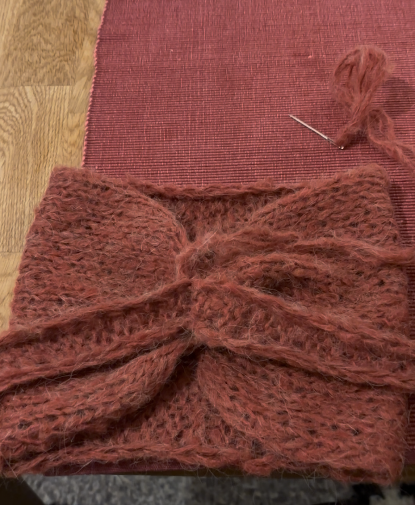
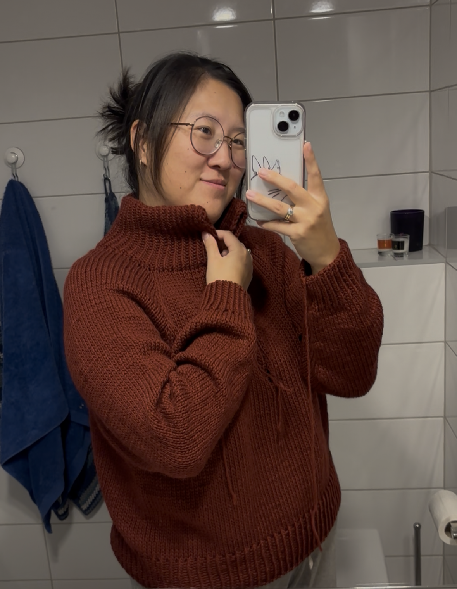
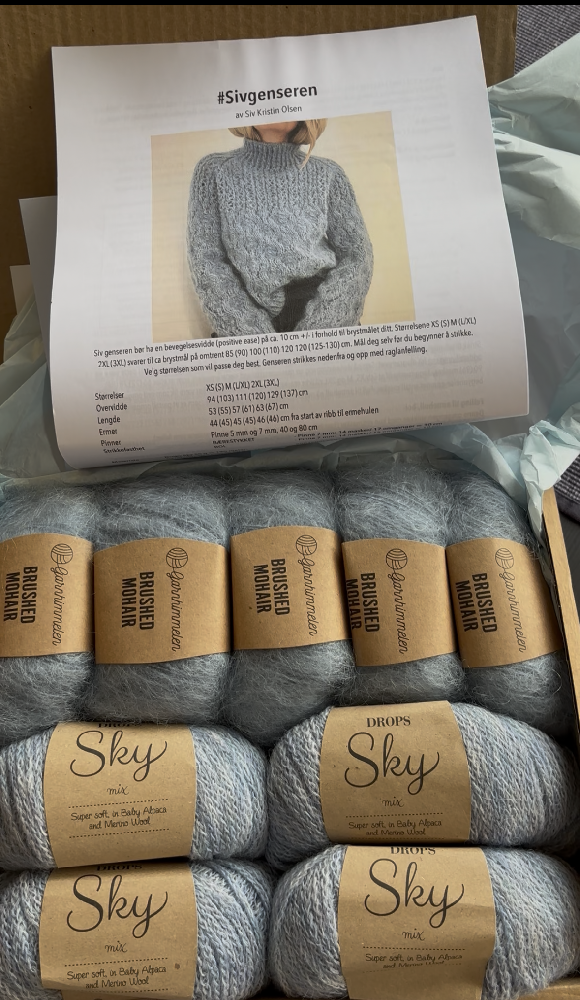
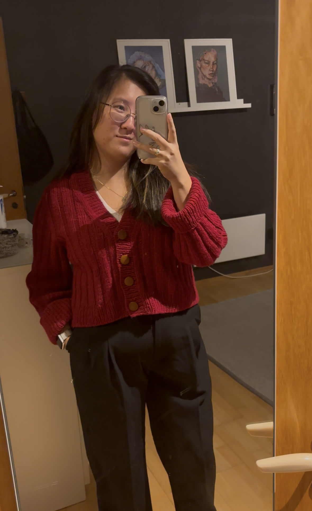

My name is AJ and I am a 27 year old knitter. I share my knits and other creations on my blog and TikTok.
You can read more about me here.Posted 15 minutes ago
Trondheim, Norway
My Kiki's delivery service bow is coming along nicely!
Posted 2 days ago
Trondheim, Norway
The Siv Sweater has been a bit tricky to knit. It's a rapidly changing pattern, so there's little room to watch TV or listen to podcasts while I knit this...

Posted 5 days ago
Trondheim, Norway
I love the color and the fit of this. Cannot wait until I get the zipper in the mail so I can finish it and start wearing it!
Posted 8 days ago
Trondheim, Norway
Just recieved this new yarn in the mail. I can't wait to cast on this project!
Posted 15 days ago
Trondheim, Norway
[AD] I just finished my brand new Oda Cardigan! This was my first model-knit collaboration with @KnitApp
